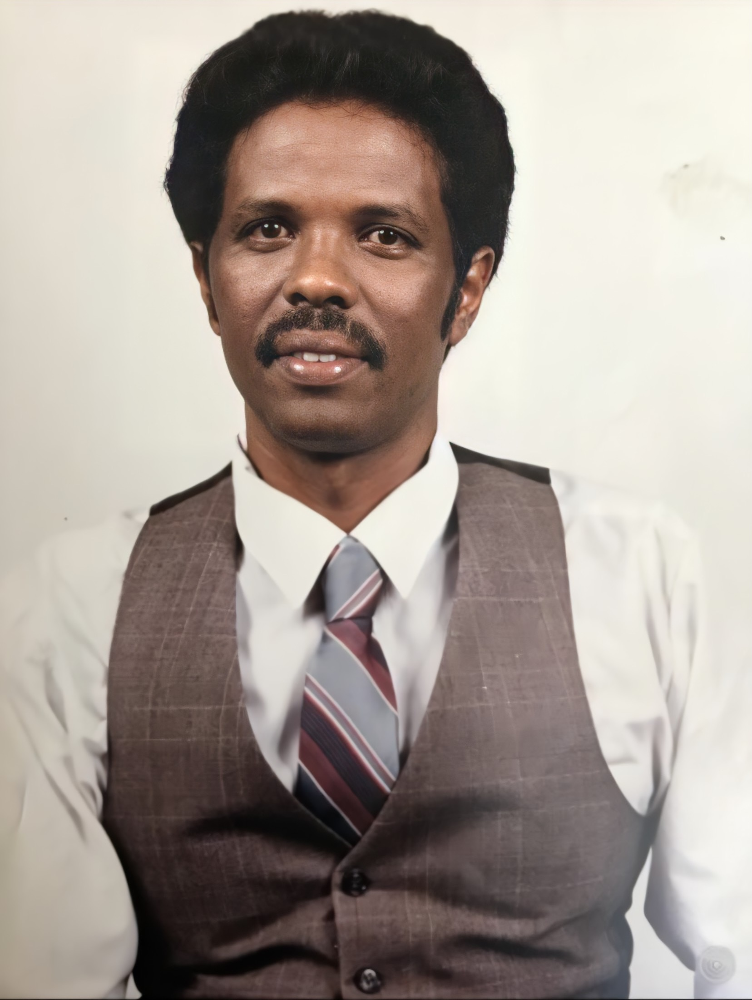
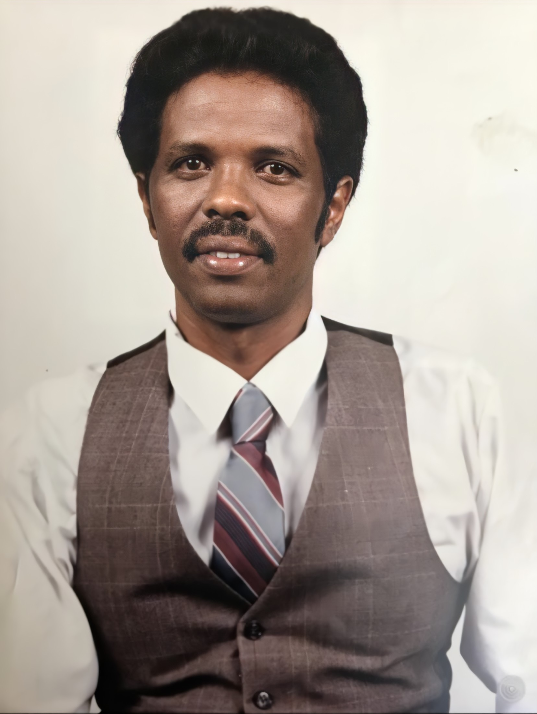
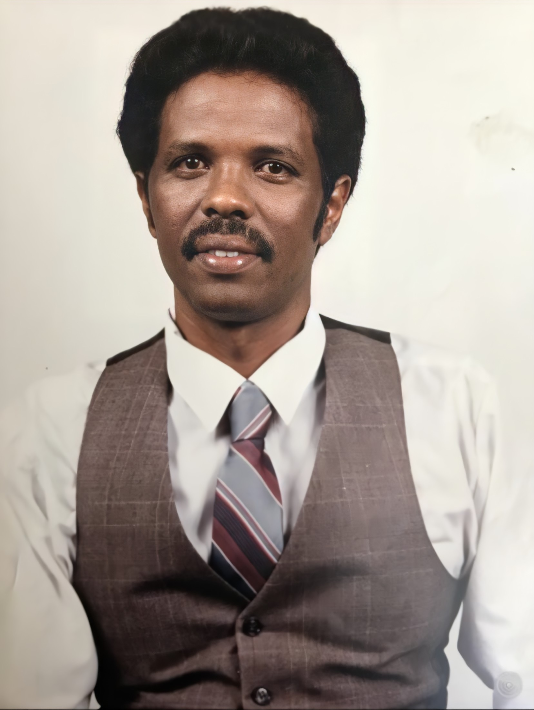
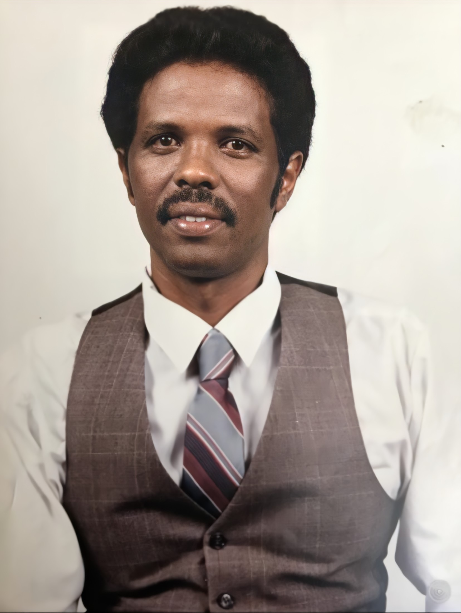

 


Abdullahi Mohamed was born on December 15, 1944 in a small town called Dhahar, Somalia. While working on a merchant ship, he had the oppurtunity to travel to many different countries, his favorite being Greece where he was fondly nicknamed "The Black Greek". On one trip Abdullahi landed in a New York port and ultimately decided to stay and begin a new life. He worked many odd jobs to support his family back home. While visting family in Somalia he met a woman named Zahra, they fell in love and decided to get married. Abdullahi brought her to New York, along with his two sons from a previous marriage. They settled in Brooklyn, New York, after a few years they welcomed their baby girl named Iman.
Abdullahi worked tirelessly for his family, his occupation was the main porter at The Remsen, a 12 story co-op in Brooklyn Heights. There, he worked along-side his wife who was the front desk concierge. His two sons moved out of the home and their youngest child, Iman, attended a private Islamic school. Abdullahi and his family often took road trips together, making beautiful memories along the way. His dream was to retire in Somalia, but unfortunately, Abdullahi suddenly passed away from stage 4 liver cancer on June 30th, 2008.